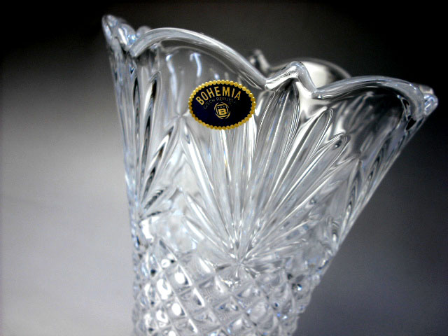

| A |
| |
| AFAP |
As Fast as possible. uunin kuumennus täysillä tai vastaavasti jäähdytys
niin nopeasti kuin uuni jäähtyy. Käytetään myös ilmaisia SKIP.
|
AFAP
SKIP |
| Aihio |
Puolivalmiste, esimerkiksi fuusattu levy
joka odottaa slumppausta. |
Blank |
| Allefuusaus |
Kun paloja fuusataan yhtenäisen päälilasin alle. Katso
perusfuusaus |
fusing under |
| Aluminioksidi |
Aluminioksidi, Al2O3 on kovaa ainetta jota käytetään hiekkapuhalluksessa ja hiomakivissä.
On myös hyvä erotusaine estämään lasin tarttumista. Tärkeä ainesosa monissa muottiseoksissa. |
Alumina |
| Anhydridi |
Kiteinen aine, josta kidevesi on poistettu tavallisesti kuumentamalla
|
Anhydrate |
| Amorfinen |
Kiteytymätön kiinteä aine, kuten lasi, monet muovit ja hartsit. |
Amorphic |
| Antiikkilasi |
Valssaamalla tehty lsi, joka ei ole optisesti täysin kirkas
vaan pinnassa on epätasaisuutta.ja lasin sisällä usein kuplia. Nimitys tulee ulkonäöstä, ei lsin iästä. |
Antique glass |
| Aplikaatio |
Käsitöistä lainattu termi. Lasin yhteydessä se tarkoittaa mosaiikin
tapaista kylmää työtapaa
joka on koottu liimaamalla palat pohjalasille ja täyttämälla raot kitillä. |
Application |
| Artista |
Eräs Schott'in valmistama
sulatuslasilaatu |
GNA engl. Artista |
| Aukaisupihdit |
Pihdit, joilla puristamalla saadaan leikkausviiru aukeamaan
Lue lisää Välineet ja tarvikkeet |
|
| Aventuriini |
Läpikuultava lasi jossa on kimaltelevia kulta-, kupari- tai kromihiukkasia.
Nimi tulee aventuriini mineraalista, joka on kvartsia jossa on kiillesulkeumia. |
Aventurine |
| B |
| BE | Lyhennys sanalle Bullseye. | Bullseye |
| Bentoniitti |
Savilaatu jolla on suuri kyky sitoa vettä.
Käytetään hiekkavalussa hiekan sitomiseen. |
Bentonite |
| Billet |
tiilenmuotoinen lasipalikka, joka on tarkoitettu sulatettavaksi valumateriaaliksi
| Billet |
| Bullseye | Eräs
sulatuslasilaatu | Bullseye |
| |
| Bookmark |
Kirjanmerkki, englanninkielisissä selaimissa vastaa suomenkielisten
Suosikit-valintaa |
|
| boraksi |
boraksia käytetään lasitteena (overspray)
Lue lisää Lasite |
Borax |
| borosilikaattilasi |
Kuumuutta hyvinkestävä lasilaatu, josta tehdään talousastioita. Kauppanimiä Pyrex, Jena |
Borosilicate Glass |
| Böömiläinen kristalli |
1. Lasilaatu: Lyijytön lasi jossa sooda on korvattu potaskalla.
2. Hiontatekniikka, jossa kapealla pyörivällä terällä huotaan uria joista kuvio muodostuu.

|
Bohemian Crystal |
| C |
| |
| Ceriumoksidi |
Metallioksidi, jota hyvin hienona jauheena käytetään lasin kiilloitukseen |
Cerium oxide |
| D |
| |
| Dalle |
tiilenmuotoinen paksu lasikappale. Käytetään usein valutöiden materiaalina |
Billet, Dalle |
| devitrifioitua |
Kiteiden muodostumista lasissa, jolloin pintaosa menettää nesteen ominaisuutensa ja muuttuu sameaksi |
s. devitrification tai devit
v. devitrifify |
| dikro |
dikroidinen lasi, jonka pinnoite jakaa valon kahtia
niin että heijastuva valo saa värin ja läpikulkeva valo sen vastavärin.
Suosittu lasi koruissa |
Dicroidic |
| E |
| |
| Emali |
emalit ovat kyvin hienoksi jauhettua värillistä lasia.
Useimmiten emalia käytetään niin ohuelti ettei yhteensopivuusdesta ole ongelmaa.
Emalia voidaan maalata, silkkipainaa tai ruiskuttaa pintaan.
Polttolämpö yleensä alempi kuin fuusauksessa.
|
Enamel |
| Erotusaine |
1. aine jolla peitetään uunilevyn tai
muotin pinta. Se estää lasin tarttumisen alustaansa.
Uunipesu tarkoittaa samaa.
Myös kuitupaperia
voidaan käyttää erotusaineena
Kipsiesineiden käytetään rasvaa ja/tai saippuaa erotusaineena. |
Separator
Kiln Wash
engl. Bat Wash |
| Etsaustahna |
erittäin myrkylline ammoniumbifluoridin seos, joka on sakeutettu
helpommin käsiteltäväksi. Käytetään kuvioiden syövyttämiseen lasin pintaan.
Sileässä lasissa etsattu alue erottuu himmenä ja valkoisena valoa vasten |
Etching Cream |
| F |
| |
Fasettihiottu |
Lasi, jonka reunaan on hiottu ja kiillotettu näkyvä viiste |
Facet grinding |
| Float lasi |
Pilkingtonin kehittämä lasin valmistusmenetelmä,
jossa lasiaines valetaan sulan tinan päälle. Näin valmistettu ikkunalasi
on erittäin sileätä ja tasalaatuista
Lue lisää |
Float Glass
Window glass |
| flussi |
oikeammin lasite on lasipölyn ja sideaineen sekoitus,
jota voidaan käyttää tasoittamaan ja kiillottamaan pintaa.
Flussi voidaan ruiskuttaa tai maalata pehmeällä siveltimellä.
Lue lisää Lasite |
Flux,
Overspray
Overglaze
|
Foliointi |
leikatun lasinpalan kehystäminen folioteipillä ennen kiinnijuottamista
(tiffanytekniikka) |
Foiling |
| Fritti |
katso lasimurska |
| Frittimaalaus |
työtapa jossa muodostetaan (tqvallisesti esittävä) kuva sulattamalla
erivärisiä frittejä kuvioiden muotoon |
Frit painting |
| fuusaus |
lasin yhteensulattaminen uunissa.
Lue lisää
ja täältä |
v. fusing
s. fusion
a. fused |
| G |
| |
| Glitteri, glimmeri |
Hienoksi jauhettua värjättyä kiillettä, jota käytetään antamaan pinnalle
väriä ja välkettä. Se ei varsinaisesti fuusaudu lasiin, mutta saadaan tarttumaan
kun pohjalasi kuumennetaan kyllin pehmeäksi. |
Mica |
| gritti |
eli seulaluku on ilmaisu jauheiden, erityisesti hioma-aineiden
karkeudelle. Luku määräytyy sen mukaan montako lankaa tuumalla on seulassa josta aine
ei enää mene läpi. Suuri grit-luku tarkoittaa siis hionojakeisempaa ainetta. |
Grit |
| H |
| |
| Halkaisupihdit |
Katso aukaisupihdit |
| hauduttaminen |
uunin lämpö pidetään tasaisena ja annetaan lämmön vaikuttaa |
s. soaking
v. soak |
Hiekkapuhallus |
Lasin pintaan puhalletaan paineilmalla hiekkaa,
alumiinioksidia tai muuta hioma-ainetta, tavallisesti suojamskin läpi.
Se kuluttaa lasin pinnan himmeäksi.
Hiekkapuhalluksella saadaan myös syvempiä reliefejä. |
Sand blasting
Etching |
| Hioma-aine |
hienojakoinen jauhemainen tai tahna joka hangatessa hioo (kuluttaa) pinnan sileämmäksi.
Hioma-aine voi olla myös hiomapaeriin tai muuhun pohjaan kiinnitetty. |
| Hiomakone |
hiomakopneita on erilaisia. Lasitöissä tavallisin on reunahiomakone,
jossa timanttipinnoitettu pyörivä rulla tekee hankaustyön.
Ammattikäytössä on myös nauhahiomakoneita ja tasohiomakoneita. |